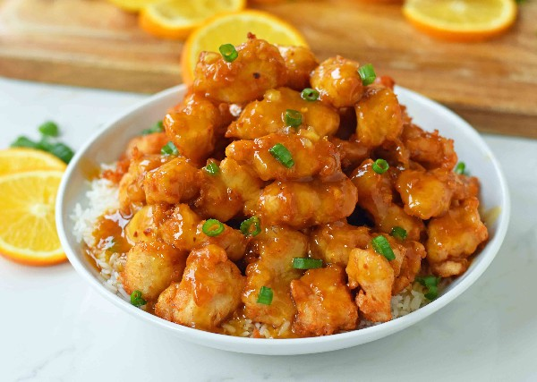

Orange Chicken Recipe

How to make delicious orange chicken!
A delicious citrus chicken recipe with flavors reminiscent of the orange chicken from a popular restaurant in
the mall.
Ingredients
- 1/2 cups water
- tablespoons orange juice
- 1/4 cup lemon juice
- 1/3 cup rice vinegar
- 2 1/2 tablespoons soy sauce
- 1 tablespoon grated orange zest
- 1 cup packed brown sugar
- 1/2 teaspoon minced fresh ginger root
- 1/2 teaspoon minced fresh ginger root
- teaspoon minced garlic
- 2 tablespoons chopped green onion
- ¼ teaspoon red pepper flakes
- 3 tablespoons cornstarch
- 2 tablespoons water>
Steps
- Pour 1 1/2 cups water, orange juice, lemon juice, rice vinegar, and soy sauce into a saucepan and set over
medium-high heat.
- Stir in the orange zest, brown sugar, ginger, garlic, chopped onion, and red pepper flakes. Bring to a boil.
- Remove from heat, and cool 10 to 15 minutes.
- Place the chicken pieces into a resealable plastic bag. When contents of saucepan have cooled, pour 1 cup of
sauce into bag.
- Reserve the remaining sauce. Seal the bag, and refrigerate at least 2 hours.
- In another resealable plastic bag, mix the flour, salt, and pepper. Add the marinated chicken pieces, seal the
bag, and shake to coat.
- Heat the olive oil in a large skillet over medium heat. Place chicken into the skillet, and brown on both
sides.
- Drain on a plate lined with paper towels, and cover with aluminum foil.
- Wipe out the skillet, and add the sauce. Bring to a boil over medium-high heat.
- Mix together the cornstarch and 2 tablespoons water; stir into the sauce.
- Reduce heat to medium low, add the chicken pieces, and simmer, about 5 minutes, stirring occasionally.